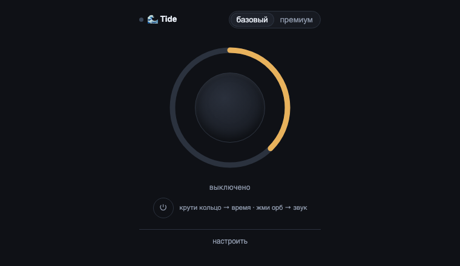
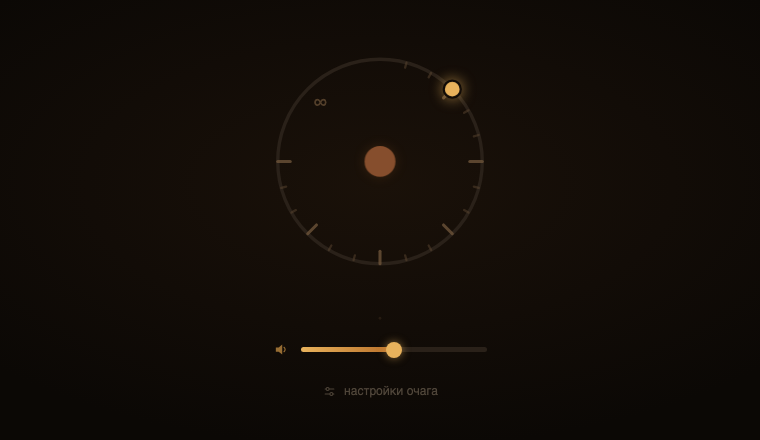
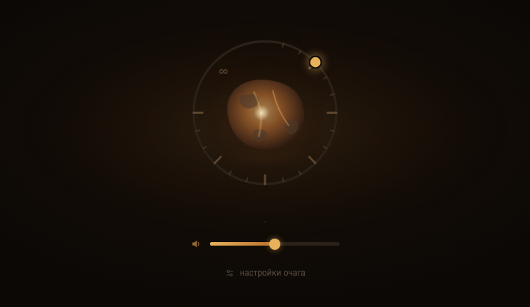
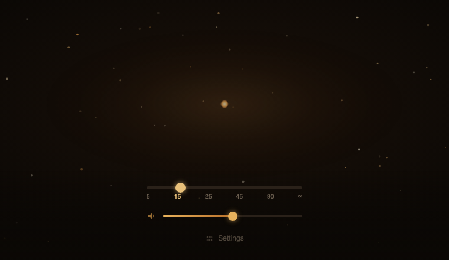
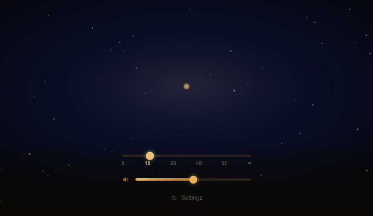
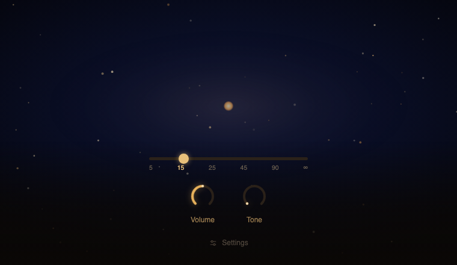
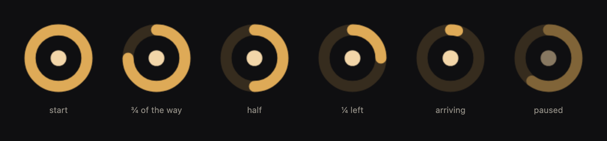

A focus timer with no digits on screen. Time is made of sound: it rises as you begin, holds steady through the session, and eases off as you arrive. Nothing is streamed and nothing is played back — every sound is computed on the device while you work.






Next: a web version, so it can be heard on a phone with nothing installed.
Every frame above is the real panel of that day, raised out of the repository and photographed — not a mock-up. Captions say what changed, not what the date was.

People who cannot work in silence. Most of them are adults with ADHD. But they do not search for that word — they search for “cannot get started” or “where did two hours go”. Those same people are the ones a bell hurts, because being yanked out of work costs them more than getting into it. Most timers are built to do exactly that.
1.1.0 added a second layer of sound — music over the noise, as much or as little of it as you want.
The toolbar icon became the timer itself: it shows how far the session has got without opening the panel.
A bug in the sound, found on a live test: the layer that should have gone silent kept playing after arrival.
Submitted to the store.
The hearth became a sky. A warm ember in a ring read as a potato with a rim. The screen became a starfield instead, with the star as the destination.
Reversed the founding assumption. The project had started as “sound first, timer optional”; use showed the timer is the centre and the sound is what time is made of.
First shape: a dial with a ring for minutes and an orb for the sound. The orb grows towards fullness instead of draining away.
Time is carried by noise, and it drifts slowly instead of changing in steps. Anything sudden pulls attention away from the work.
Started from a demand survey, under the working name Tide.